Sunumumuz 3 temel mantıksal blok halinde ele alınacaktır:
BLOK 1 Temel & Taşıma Katmanı
OSI & TCP/IP Modelleri
Link (Bağlantı) Katmanı: Ethernet & MAC
IP Katmanı: Adresleme & Paket Yapısı
TCP & UDP: Güvenli vs Hızlı Taşıma
BLOK 2 Ağ & Keşif Servisleri
ARP: IP - MAC Adres Çözümleme
DHCP: Otomatik IP Yapılandırma
DNS: Alan Adı - IP Çözümleme
BLOK 3 Uygulama Katmanı
HTTP: Web Veri İletimi
SSH: Güvenli Uzak Erişim & Shell
SMB: Ağ Dosya & Kaynak Paylaşımı
OSI Referans Modeli (7 Katman)
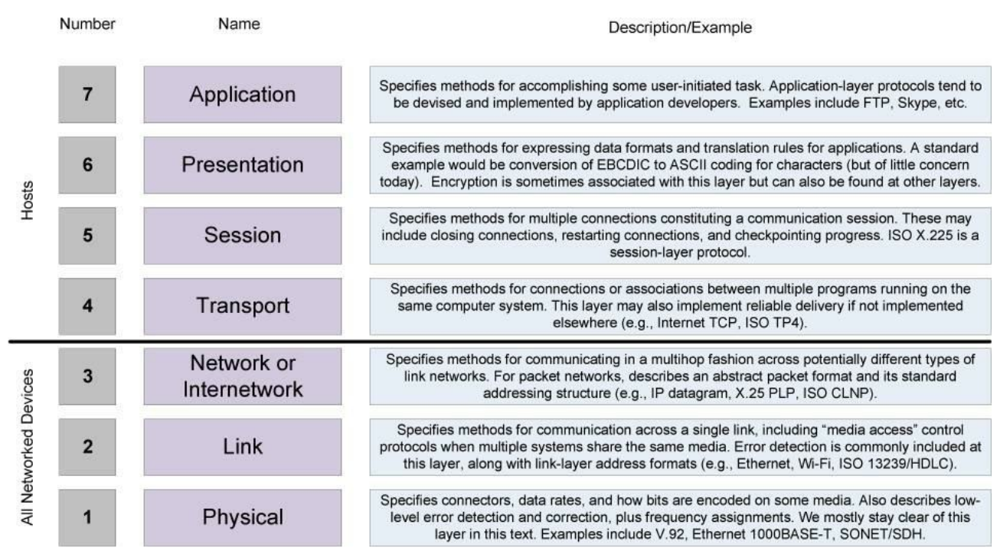
Şekil 1: OSI (Open Systems Interconnection) 7 Katmanlı Referans Modeli
TCP/IP Protokol Mimarisi
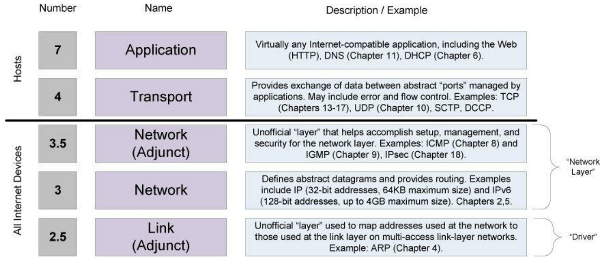
Şekil 2: TCP/IP Mimari Katmanları & Protokol Hiyerarşisi
İnteraktif Veri Kapsülleme (OSI Encapsulation)
7. ApplicationData
6. PresentationData
5. SessionData
4. TransportSegment
3. NetworkPacket
2. Data LinkFrame
1. PhysicalBits
L7 DATAKatman 7: Uygulama
PDU: Data | Adım 1 / 7
Canlı Paket / PDU Yapısı (Protocol Data Unit):
Canlı HTTP Veri Dönüşümü Önizlemesi (Live Payload Inspector):HTTP Data Transformation
osi-layer-inspector --live-stream
GET /api/v1/user HTTP/1.1...
Kullanıcı verisi oluşturulur (HTTP GET isteği, SSH komutu veya dosya verisi).
OSI Katmanlarının Ağ Cihazlarındaki Karşılığı
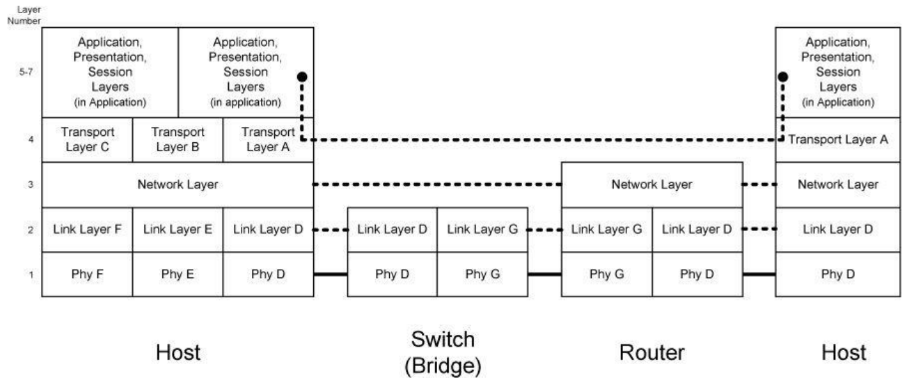
Şekil 3: OSI Katmanları, Paket Kapsülleme ve Ağ Cihazları (Switch, Router, Host) İlişkisi
Why Do We Need a HUB?
2 Devices = 1 Cable
➔
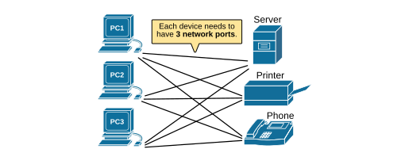
5 Devices = 10 Mesh Cables!
SOLUTIONCentralized Star Topology with HUB
Connecting \(N\) devices directly requires \(\frac{N(N-1)}{2}\) cables and multiple NICs per computer.
A HUB solves this cabling nightmare by serving as a single central junction—allowing every computer to join the network using just 1 cable!
What is a Network Hub (Repeater)?
01. PORT INGRESS
Electrical Bit Arrival
Raw electrical pulses enter a single physical port from Host A.
02. SIGNAL REPEATER
Layer 1 Amplification
Hub amplifies voltage without inspecting MAC addresses or IP headers.
03. ALL-PORT BROADCAST
Multiport Flooding
Signal floods out to every other port simultaneously (Hosts B, C, D).
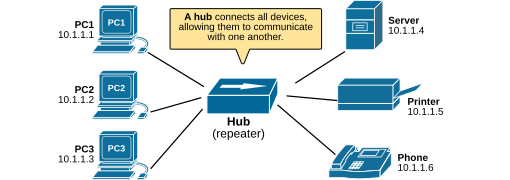
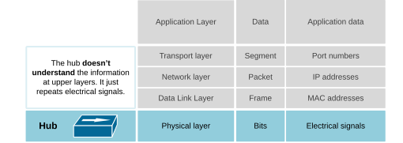
What is a Collision Domain?
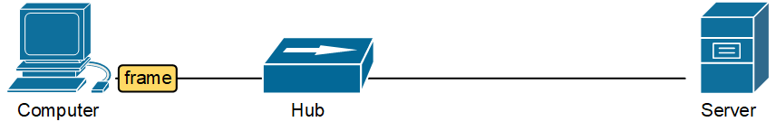
SHARED MEDIUM
All devices connected to a Hub share a single electrical collision domain.
DATA CORRUPTION
Simultaneous transmissions collide, destroying electrical data pulses.
CSMA / CD PROTOCOL
Hosts detect collisions, abort transmission, and wait a random backoff time.
What is a Network Bridge?
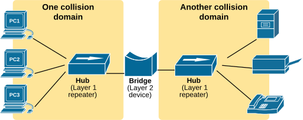
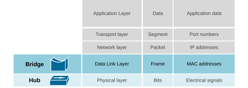
LAYER 2 DATA LINKSEGMENT ISOLATION
Software MAC Address Filtering
A Bridge operates at Layer 2 to divide one large, congested collision domain into two smaller, isolated segments.
bridge-mac-table --inspect
[Bridge Logic] Ingress Frame on Port 1
Destination MAC: 00:11:22:AA:BB (Segment 1)
Action: FILTER (Do not forward across to Segment 2)
✔ Segment 2 traffic remains 100% free of local noise!
Why Do We Need a Network Switch?
VS
BRIDGES (Legacy)SOFTWARE
CPU Software Processing: Frame inspection done via software code, causing packet latency.
2–4 Port Limit: Low port density required hubs to connect clusters of computers behind each port.
Half-Duplex Shared Links: Collision risk persisted within the hubs attached to bridge ports.
SWITCHES (Modern)ASIC SILICON
Hardware ASICs: Performs MAC table lookups in dedicated silicon chips at full wire speed.
Micro-Segmentation: Every single port becomes its own dedicated collision domain.
Full-Duplex Transmission: Simultaneous send and receive on every port with ZERO collisions.
Hub — The "Dumb" Repeater
LAYER 1 PHYSICALOBSOLETE
A Hub operates at Layer 1 and has zero intelligence. When it receives electrical bits on one port, it simply repeats/amplifies that signal out to every attached port.
How it works: If Computer A sends data to Computer B, computers C, D, and E receive it too (and must manually ignore it in L2).
Drawback: All devices share 1 wire electrically (Single Collision Domain)—only 1 device can transmit at a time without collisions.
Status: Obsolete in modern networks.
HUB INTERACTIVE TOPOLOGY Broadcast Flooding
Click a button below to transmit from Comp A
L1 HUB
Comp A (Sender)
Comp B
Comp C
Comp D
Click a button to trigger live electrical bit duplication across all connected ports...
Bridge — Two-Port Traffic Cop
LAYER 2 DATA LINKTRANSITIONAL
A Bridge operates at Layer 2 and was invented to divide one large, congested hub network into two smaller collision segments.
How it works: Reads destination MAC address in software. If target device lives on the same side, blocks frame from crossing over; if on the other side, forwards it.
Key Limitation: Mostly software-based with very few ports (usually 2 to 4), serving as a transitional technology before high-port switches took over.
BRIDGE TOPOLOGY Software MAC Filter
Bridge Ready: Test Same vs Cross-Segment transmission
SEGMENT 1 (COLLISION DOMAIN 1)
SEGMENT 2 (COLLISION DOMAIN 2)
L2 BRIDGE
Comp A (Seg 1)
Comp B (Seg 1)
Comp C (Seg 2)
Comp D (Seg 2)
Click a button to test how Bridge filters frames in software by checking destination MAC...
Switch — Multi-Port Highway
LAYER 2 DATA LINKHARDWARE ASIC
A Switch is an advanced, hardware-accelerated, multi-port bridge operating at Layer 2.
How it works: Maintains a MAC address table in specialized hardware (ASICs). When Comp A sends data to Comp B, delivers the frame only to Comp B's port.
Key Advantage: Every single port gets its own dedicated bandwidth and collision domain, allowing Full-Duplex communication (simultaneous send/receive).
SWITCH TOPOLOGY Dedicated ASIC Routing
Switch Ready: Select target port for dedicated hardware delivery
ASIC SWITCH
Comp A
Comp B
Comp C
Comp D
Click a button to watch Switch lookup MAC ASIC table & route frame strictly to destination port...
What is a Router?
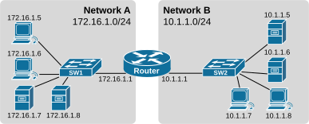
Figure 1: Router Joining Network A (172.16.1.0/24) & Network B (10.1.1.0/24)
INTER-NETWORKSwitch vs. Router Role
A Switch handles communication within a local Ethernet network (LAN). A Router joins completely separate IP networks together (LAN to ISP WAN, or Enterprise branches to Cloud).
KEY ARCHITECTURE NOTE
End devices (PCs, servers) do not connect directly to a router. They connect to a switch, and the switch connects to a router interface!
How Does a Router Work?
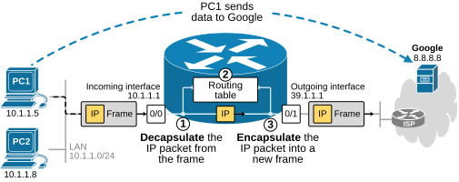
Figure 2: Interfaces (0/0 LAN 10.1.1.1 & 0/1 WAN 39.1.1.1) & Routing Lookup
01. INTERFACES
Each interface connects to a different subnet. Rule: A router can have only ONE interface per network.
02. ROUTING TABLE
Maps destination subnet \(\rightarrow\) next hop / exit interface \(\rightarrow\) metric. (Static or Dynamic OSPF/BGP).
router-packet-forwarding-steps
1. Strip Ingress L2 Frame ➔ Read L3 IP Header
2. Compare Dst IP against Routing Table
3. Encapsulate in NEW L2 Frame ➔ Next-Hop MAC
STEP 2: BEST ROUTE SELECTIONLongest Prefix Match (LPM) Rule
All three entries match, so the router compares matching bit counts:
24 bits (\(m_3\)) > 16 bits (\(m_2\)) > 0 bits (\(m_1\)).
✔ Winning Route: Entry 3 (192.168.1.0/24) is selected because it has the most specific network mask!
IP Routing Starts at the Host
FIRST ROUTING DECISIONThe Host Decides Before Data Touches the Wire!
PC1 wants to send data to Google (8.8.8.8). PC1 compares 8.8.8.8 against its own IP & Mask (10.1.1.50 / 255.255.255.0).
Using subnetting logic, PC1 determines 8.8.8.8 is outside its local LAN!
SCENARIO A: SAME SUBNETDIRECT ARP
If destination IP is on the same local network, host sends packet directly to target using ARP to resolve destination MAC address. No router needed!
SCENARIO B: DIFFERENT SUBNETDEFAULT GATEWAY
Destination is outside local LAN \(\rightarrow\) Host sends packet to Default Gateway Router (10.1.1.1). Host sets Ethernet Destination MAC = Router R1 MAC (CCC)!
Router — Gateway Between Networks
LAYER 3 NETWORKINTER-NETWORK
While hubs, bridges, and switches connect devices within a local network (LAN), a Router operates at Layer 3 to join completely separate networks together (e.g. Home LAN to ISP WAN/Internet).
How it works: Strips off Layer 2 frames, inspects IP addresses inside Layer 3 packets, and uses a routing table to determine the best path toward final destination.
Key Advantage: Blocks Layer 2 broadcasts from leaking into other networks, keeping broad network traffic isolated and secure.
ROUTER TOPOLOGY Inter-Network & Isolation
Router Ready: Test IP Routing vs L2 Broadcast Isolation
LAN A (192.168.1.0/24)
WAN Internet (10.0.0.0/8)
L3 ROUTER
Comp A (LAN)
Comp B (LAN)
Switch A
Web Server (WAN)
Click a button to test Layer 3 IP routing across networks vs L2 broadcast isolation...
Transport Layer Overview
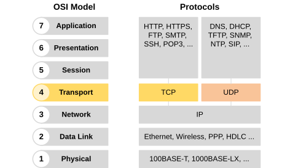
Figure: Transport Layer (OSI Layer 4)
LAYER 4 Key Essentials
Application Boundary: Serves as the boundary between application processes and network infrastructure.
Process-to-Process Delivery: While Layer 3 (IP) routes host-to-host, Layer 4 delivers data process-to-process via port numbers.
Protocol Options: Primarily uses TCP (reliable) and UDP (fast), alongside other protocols (SCTP, QUIC).
Host-to-Host (IP) ➔ Process-to-Process (Ports)
Primary Functions of Transport Layer
The primary function of the transport layer is enabling multiple application processes (e.g. Web Browser, SSH terminal, DNS lookup) running on a single host to transmit and receive data concurrently over a single network connection.
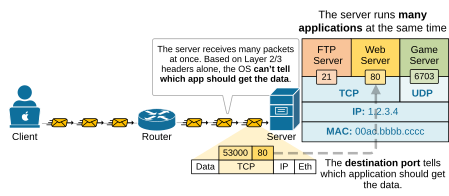
Figure: Port-Based Multiplexing & Concurrent Process Communication
What is TCP (Transmission Control Protocol)?
TCP is a core Layer 4 protocol that provides reliable, connection-oriented, and byte-stream-oriented data delivery between application processes.
TCP ESSENTIALS Core Characteristics
Connection-Oriented: Requires an explicit session setup (3-Way Handshake) before transmitting user data.
Byte-Stream Service: Treats data as a continuous stream of numbered bytes, not isolated messages.
Full-Duplex: Enables simultaneous, bidirectional data flow between client and server.
In-Order Delivery: Reorders out-of-sequence segments using Sequence Numbers before passing data to applications.
SESSION ESTABLISHMENT 3-Way Handshake
Before data transmission begins, client and server negotiate sequence numbers and buffer parameters:
Fixed 8-byte overhead with zero connection setup state!
TCP vs. UDP Comparison Matrix
PROTOCOL SELECTION Architectural Trade-Offs
Transport protocol selection is guided by application requirements for guaranteed delivery versus minimal latency:
TCP (Reliable Transmission): Use when every single byte must arrive accurately in exact sequence (Web pages, files, commands).
UDP (Best-Effort Delivery): Use when low latency and real-time delivery are more critical than retransmitting lost packets (VoIP, video calls, gaming).
Both protocols rely on Port Numbers for Layer 4 multiplexing.
MATRIX Feature Comparison
FEATURE
TCP
UDP
Connection
Connection-Oriented
Connectionless
Header Size
20 – 60 Bytes
Fixed 8 Bytes
Reliability
Guaranteed (ACK/ARQ)
Best-Effort (No ACK)
Data Order
Sequenced Stream
Independent Datagrams
Speed / Overhead
Lower Speed / High
Ultra Fast / Minimal
Use Cases
HTTP/S, SSH, FTP, Email
DNS, DHCP, VoIP, Gaming
Summary: Reliability vs. Speed Trade-Off
Internet Protocol (IP)
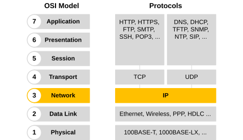
Figure: The Network Layer (OSI Layer 3)
LAYER 3 Network Layer Foundation
In this lesson, we examine the 3rd layer of the OSI model called the Network Layer. Unlike the other OSI layers that have multiple protocols, layer 3 mostly depends on just one— the Internet Protocol (IP), which has developed into two main versions:
IPv4: Uses 32-bit addresses and supports about 4.3 billion unique IPs.
IPv6: Uses 128-bit addresses, allowing for a much larger number of IPs and improved network efficiency.
Universal Addressing & Packet Routing Protocol
Network Layer Postal Service Analogy
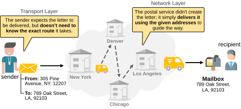
Figure: Network Layer as the Postal Service Analogy
IPv4 Header Structure
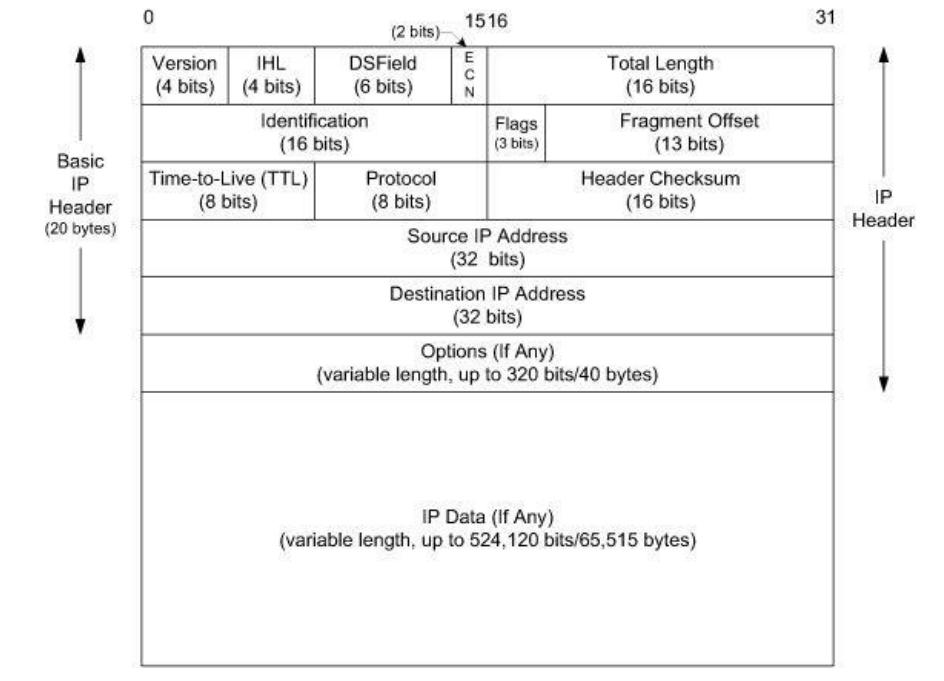
Figure: IPv4 Datagram Header (20 to 60 Bytes)
IPV4 FIELDS Key Explanations
Version (4b): Identifies IP version (set to 4 for IPv4).
IHL (4b): Internet Header Length in 32-bit words (Min: 5 = 20B, Max: 15 = 60B).
Type of Service (8b): DSCP & ECN bits for Quality of Service (QoS) prioritization.
• Security:Optional IPSec vs. Built-in Native IPSec Support
Data Link Layer Overview
OSI LAYER 2Direct Node-to-Node Communication
In this lesson, we examine the 2nd layer of the OSI model, called the Data Link Layer. Its main job is to move data between two devices that are directly connected at the physical layer.
CORE TASKS Primary Responsibilities
Framing & Addressing: Encapsulates Layer 3 IP packets into frames with physical MAC addresses.
Medium Transmission: Prepares frames so the physical layer can convert data into electrical, optical, or radio signals over the medium.
Error Detection & Media Access Control
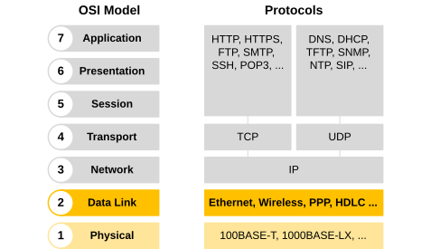
Figure: Data Link Layer in the OSI Stack
Framing
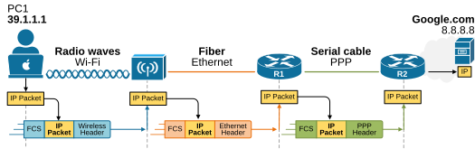
Figure: Layer 2 Data Link Framing & Hop-by-Hop Re-Encapsulation
1. HEADER Addressing
Contains 48-bit Source & Destination MAC addresses and protocol control metadata used for local network delivery.
2. PAYLOAD Layer 3 Data
The actual encapsulated packet delivered from Layer 3 (e.g., the IPv4 or IPv6 packet carrying application data).
3. TRAILER Error Check
Contains error-checking information (Frame Check Sequence - FCS / CRC) to detect transmission errors.
Frame Header Structure
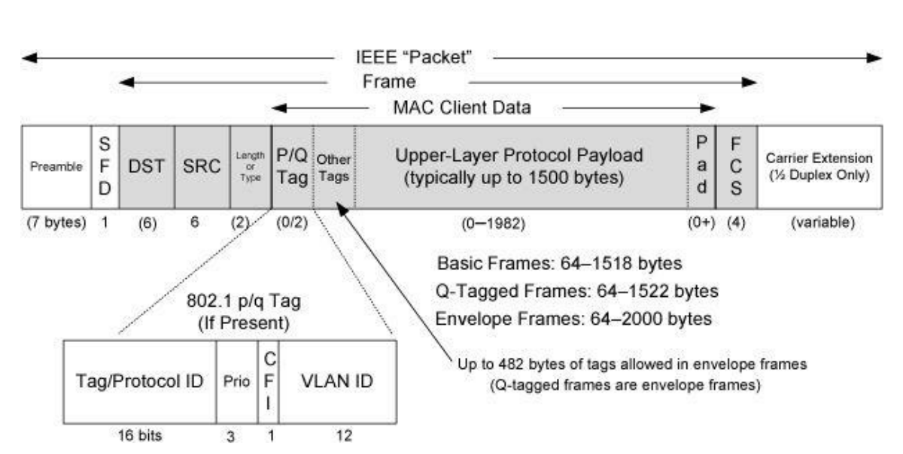
Figure: Ethernet II Frame Header Format
FIELD BREAKDOWN Key Explanations
Preamble & SFD (8B): Clock synchronization and Start-of-Frame delimiter.
Destination MAC (6B): 48-bit physical address of the receiving network interface.
Source MAC (6B): 48-bit physical address of the sending network interface.
Type / Length (2B): Identifies upper Layer 3 protocol (e.g. 0x0800 for IPv4, 0x86DD for IPv6).
Standard Ethernet II Header Format (14 Bytes + 4B FCS)
Data Link Sublayers
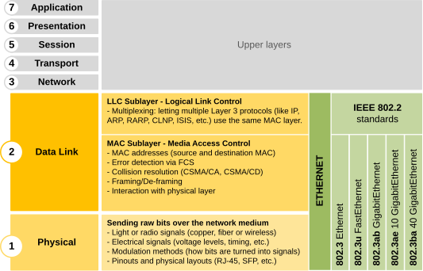
Figure: LLC and MAC Sublayer Architecture (IEEE 802)
IEEE 802 Sublayer Breakdown
LLC (Logical Link Control - IEEE 802.2): Upper sublayer that interfaces with Layer 3 network protocols, handling protocol multiplexing and flow control.
MAC (Media Access Control - IEEE 802.3 / 802.11): Lower sublayer responsible for physical MAC addressing, framing, and managing access to the physical transmission medium.
Bridges software protocol logic with physical hardware media!
Address Resolution Protocol (ARP)
ARP (Layer 2.5) resolves known 32-bit IPv4 addresses into 48-bit physical Ethernet MAC addresses for local delivery.
LAYER 2.5 ARP Envelope
Bridges Layer 2 physical framing and Layer 3 IP routing.
Peer Identification: Leaking a MAC or IP address can tie specific network behavior to an identifiable peer in the lab.
BROADCAST Resolution Mechanism
ARP Requests use Ethernet broadcast (FF:FF:FF:FF:FF:FF) to discover unknown MAC addresses.
Subnet Visibility: Broadcast traffic exposes MAC and IP bindings across the entire local broadcast domain.
SECURITY IMPACT Risk Exposure
How can this information be useful to an attacker?
Network Risk: Exposing gateway or internal DNS configurations can pose a security risk to the local network infrastructure.
ARP Header Structure
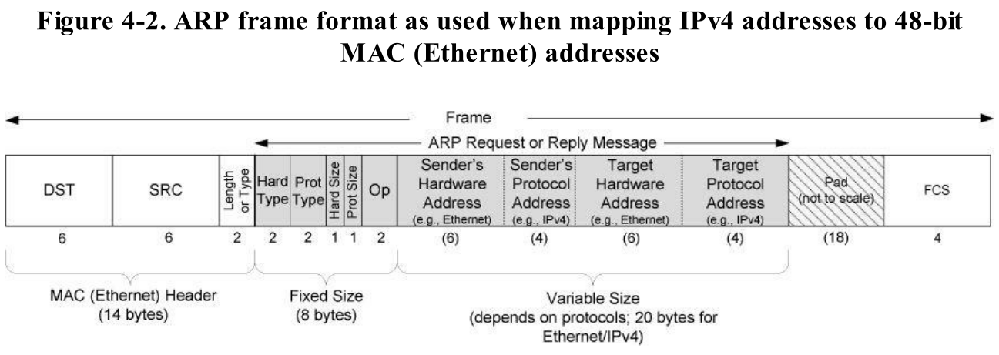
Figure: ARP Packet Header Structure (28 Bytes for IPv4 over Ethernet)
ARP FIELDS Brief Field Breakdown
Hardware Type (2B): Network protocol type (e.g. 1 for Ethernet).
Protocol Type (2B): Upper protocol type (e.g. 0x0800 for IPv4).
Hardware Size (1B): MAC address length in bytes (6 for Ethernet).
Protocol Size (1B): IP address length in bytes (4 for IPv4).
Opcode (2B): Operation code (1 for Request, 2 for Reply).
Sender / Target Addresses: Sender MAC (6B) & IP (4B), Target MAC (6B) & IP (4B).
Fixed 28-byte packet structure for IPv4-to-Ethernet resolution.
Click a target button below to trigger ARP resolution
L2 SWITCH
Comp A (.10)
Comp B (.20)
Comp C (.30)
Comp D (.40)
Click a target button above to execute live ARP Broadcast request & Unicast reply...
ARP Cache (Table)
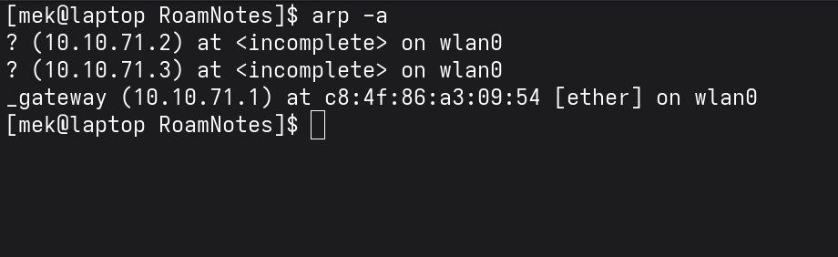
• Host & Router Storage: The ARP Cache (table) is stored locally in hosts and routers to avoid repeated broadcast queries.
• Entry Expiration: Dynamic entries have an expiration duration of 20 minutes per entry.
• Static Labeling: On Windows, manually configured permanent entries are labeled as (static).
Dynamic Host Configuration Protocol (DHCP)
DHCP (Layer 7) automatically provisions IP addresses, subnet masks, default gateways, and DNS servers to network devices.
ARCHITECTURE Client / Server Model
DHCP uses a client/server architecture. Home routers host an embedded DHCP server, while DHCP client daemons come pre-installed on all modern OSs.
Centralized IP Administration
CONFIGURATION Dynamic vs. Static
IP parameters can be manually assigned (static) or dynamically allocated automatically via DHCP upon joining the network.
Zero-Touch Network Onboarding
LIFETIME DHCP Lease System
The DHCP server assigns IP addresses to devices for a specified duration (lease time), preventing permanent address pool exhaustion.
Dynamic Address Pool Recycling
DHCP Protocol Operation (DORA Process)
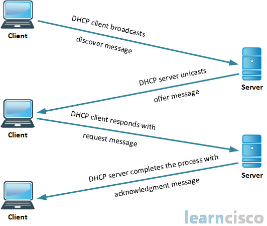
Figure: The 4-Step DHCP DORA Handshake Process
DORA STEPS Handshake Sequence
1. DHCP_DISCOVER: Client broadcasts (Src: 0.0.0.0, Dst: 255.255.255.255) to locate available DHCP servers.
2. DHCP_OFFER: Server reserves an IP & responds with offer (IP, lease time, subnet mask, DNS IPs).
3. DHCP_REQUEST: Client selects offer & broadcasts request to finalize lease with chosen server and release other servers' reservations.
4. DHCP_ACK: Selected server commits IP binding to persistent storage (sends DHCPNAK if address becomes unavailable).
UDP Ports: Client (68) ➔ Server (67)
Post-Allocation & Conflict Resolution
After receiving a DHCP_ACK, the client verifies that the assigned IP address is not already in use on the local network.
1. VERIFICATION Conflict Verification
The client sends an ARP Probe request across the local network to ensure no other active device is currently using the assigned IP address.
Pre-Assignment ARP Check
2. CONFLICT DHCP_DECLINE
If an IP conflict is detected (an ARP response is received), the client abandons the IP address by sending a DHCP_DECLINE message and restarts discovery.
Abandons Conflicted IP Address
3. DEPARTURE DHCP_RELEASE
When a client gracefully leaves the network or shuts down before lease expiration, it sends a DHCP_RELEASE message to immediately free the IP for other devices.
Graceful Address De-allocation
DHCP Lease System & Timers (T, T1, T2)
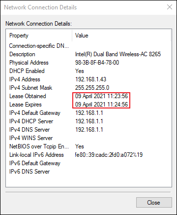
LEASE TIMERS T, T1, and T2 Details
Lease Time (T): The absolute maximum amount of time a client can use an IP address without renewing it.
Renewal Time (T1 = 0.5 × T): Set to 50% of lease time (T/2). When T1 expires, the client sends a unicast renewal request to its original DHCP server.
Rebinding Time (T2 = 0.875 × T): Set to 87.5% of lease time (7T/8). If the original server is unreachable, the client broadcasts a rebind plea to any available DHCP server.
T1 Unicast Renewal ➔ T2 Broadcast Rebind ➔ T Expiry
Domain Name System (DNS)
Video: How the Domain Name System (DNS) Works
DNS Hierarchy: Right-to-Left Resolution
www
.
example
.
net
.
Focus: Initial Recursive Query for www.example.net.
DNS Hierarchy: Star Topology Flow
FULLY QUALIFIED DOMAIN NAME (FQDN)
www
.
example
.
net
.
Focus: Initial Recursive Query for www.example.net.
1. OS & Browser Cache:Instant Memory Lookup. Checks local RAM (`systemd-resolved`, browser cache). If found, returns IP immediately.
2. Static Files (/etc/hosts):Zero Network Traffic. Governed by `/etc/nsswitch.conf` (`hosts: files dns`). Inspects local static file for domain mappings (e.g. `10.10.11.23 target.htb`).
3. Internal DNS Server:Local Network Query (UDP 53). Client sends a recursive query to local router/corporate DNS (`192.168.1.1` or `10.0.0.2`) to check local network zones.
4. External / ISP DNS Forwarding:Upstream Global Lookup. If domain is public (e.g. `google.com`), Internal DNS forwards to ISP / Public DNS (`8.8.8.8`), performing Root ➔ TLD ➔ Authoritative iterative lookup.
5. Unresolved Domain Handling:NXDOMAIN Error. If no server holds the record, Authoritative server returns `NXDOMAIN` (Non-Existent Domain), propagating back to display `ERR_NAME_NOT_RESOLVED`.
Common DNS Record Types
What are the most common types of DNS records?
A
The record that holds the IP address of a domain.
AAAA
Contains the IPv6 address for a domain (as opposed to A IPv4).
CNAME
Forwards one domain/subdomain to another (does NOT provide IP).
MX
Directs mail to an email server.
TXT
Lets an admin store text notes (used for email security).
NS
Stores the name server for a DNS entry.
SOA
Stores admin information about a domain zone.
SRV
Specifies a port for specific services.
PTR
Provides a domain name in reverse-lookups.
Testing Hint: Query All Records in Action via dig
root@htb:~#dig target.htb ANY +noall +answer# Queries & displays all records (A, MX, TXT, NS, SOA)
The SMB protocol is a network file sharing protocol that allows clients to read and write to files over the network on top of TCP/IP or other protocols.
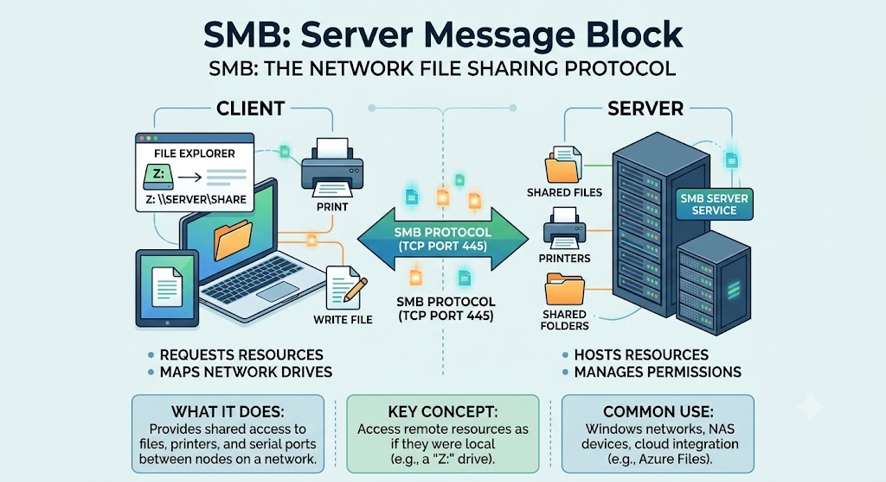
CORE FUNCTION Remote File Access
Transparently maps remote shared directories (e.g. \\SERVER\SHARE) to local drive letters (e.g. Z:), enabling direct read and write operations.
TRANSPORT Layer 7 over TCP/IP
Runs directly over TCP Port 445 in modern networks (or legacy NetBIOS over TCP/IP on Port 139) for reliable connection-oriented transport.
CAPABILITIES Shared Resources
File Operations: Open, read, write, lock, and delete remote files.
Device Sharing: Network printer sharing & serial port access.
IPC Communications: Inter-Process Communication via Named Pipes.
SMB Components
SMB Server
The component that shares resources (files, printers, and named pipes) and responds to requests from SMB clients.
SMB Client
The component that connects to remote shares and sends requests to SMB servers.
Both Windows Server and Windows Client operating systems include both SMB client and server components.
History of SMB
1983
Developed by IBM
Originally created by IBM for sharing files across networked personal computers.
1990s
Microsoft Adoption & CIFS Rebrand
Microsoft adopted the technology heavily for Windows and attempted to rebrand it as CIFS (Common Internet File System).
Modern Era
SMB 2.0, SMB 3.0 & Core Windows System
Evolved into SMB 2.0 and SMB 3.0, now serving as a core networking subsystem in Windows today.
Standard TCP, SMB over QUIC (secure internet without VPN), and RDMA for high-performance datacenters.
PERFORMANCE
Optimize transfer speeds and reduce network overhead via compression, bandwidth limits, directory caching, and WAN optimizations.
MANAGEMENT
Using PowerShell, admins can control dialect versions (SMB 2/3) and monitor real-time performance.
NetBIOS & Port 139 vs. Port 445
IBM 1980s What is NetBIOS?
NetBIOS (Network Basic Input/Output System) was created by IBM for early local area networks before TCP/IP became standard.
Computer Naming: Locating machines using 15-character names (e.g. OFFICE-PC1).
Session Management: Enabling inter-app data transfer over LANs.
EVOLUTION NBT (139) ➔ Direct SMB (445)
When TCP/IP won, Microsoft wrapped NetBIOS in TCP/IP (NBT) on Port 139.
Starting with Windows 2000, Microsoft removed the noisy NetBIOS middleman entirely, moving to Direct SMB on TCP Port 445.
OLD WAY (Port 139): [ SMB Protocol ] ➔ [ NetBIOS Layer (NBT) ] ➔ [ TCP/IP Port 139 ]
MODERN WAY (Port 445): [ SMB Protocol ] ---------------------------> [ Direct TCP Port 445 ]
💡 Real-World Analogy:NetBIOS (Port 139) is like calling through an old switchboard operator where you yell names into a room. Direct SMB (Port 445) is like dialing someone's direct phone number over a clean, high-speed fiber line.
SMB Transport Protocols
The SMB 2 / SMB 3 protocol suite supports 4 underlying transport mechanisms tailored for different network environments:
TCP 445 Direct TCP
The default standard transport for modern LAN file sharing, operating directly over reliable connection-oriented TCP.
Standard LAN Protocol Default
TCP 139 NetBIOS over TCP (NBT)
Legacy transport layer providing backwards compatibility for older operating systems and NetBIOS name resolution.
Legacy Backward Compatibility
SMB DIRECT RDMA Transport
Remote Direct Memory Access allows ultra-low latency, high-throughput memory transfers in enterprise datacenters with zero CPU overhead.
Datacenter & SAN Performance
UDP 443 SMB over QUIC
Operates over UDP 443 with TLS 1.3 encryption, enabling secure mobile file access over untrusted networks without requiring a VPN.
VPN-less Remote File Access
UNC Path Syntax: \\server\share
Universal Naming Convention (UNC) is the standard syntax Windows uses to identify files and printers across a network.
\\FILE-SERVER\SharedDocs
\\ Network Trigger
Tells Windows: "Look outside this PC onto the network."
FILE-SERVER Target
Hostname or IP address (e.g. 192.168.1.10).
SharedDocs Share
Exposed folder or resource on remote machine.
LOCAL PATHC:\Documents
Opening a file on your local disk is like opening your personal desk drawer in your office.
UNC NETWORK PATH\\SERVER\Share
Asking the central receptionist (SERVER) for a document from the company filing room (Share).
Understanding "Trees" & Tree Connect
FILE HIERARCHY What is a "Tree"?
In operating systems, file directories are structured as hierarchical trees branching from a root share.
Root (\SharedDocs)
├── 📁 Marketing
│ └── 📄 Budget.xlsx
└── 📁 Reports
└── 📄 Q1.pdf
Share Root = Tree Handle Base
PROTOCOL STEP SMB2 TREE_CONNECT
Request: Client asks to mount \\SERVER\Share or \\SERVER\IPC$.
Permission Check: Server validates share & NTFS permissions.
Tree ID (TID): Server returns a unique TID handle required for all subsequent file I/O operations.
💡 Building Analogy:
Session Setup = Showing your ID at the gate. Tree Connect = Swiping into Building B & getting a wristband (Tree ID) to open doors inside.
SMB Lifecycle & Windows OS State
Client Request: SMB2 NEGOTIATE Request
Server Response: SMB2 NEGOTIATE Response
Step 1: SMB2 NEGOTIATE
NEGOTIATION
Windows Subsystem / Kernel Driver
mrxsmb.sys / rdbss.sys (Redirector Subsystem)
Windows OS Execution Details
Windows kernel network redirector driver initiates TCP socket connection and negotiates SMB 3.1.1 features and encryption parameters.
Windows OS Graphical State Visualizer
Data Operations & File Management
Once a FileId (FID) handle is obtained, SMB uses specific opcodes for data transfer and metadata management:
DATA TRANSFERSMB2 READ & WRITE
Transfers file contents or IPC payload bytes using SessionId, TreeId, FileId, Byte Offset, and Length.
Direct Payload Byte Streaming
DIRECTORY LISTQUERY_DIRECTORY
Lists files and subdirectories (equivalent to dir / ls) matching search patterns (e.g. *.docx).
Directory Tree Enumeration
METADATAQUERY_INFO & SET_INFO
Retrieves or modifies file metadata, file sizes, creation timestamps, and NTFS Access Control Lists (ACLs).
File Attributes & ACL Security
TEARDOWNSMB2 CLOSE & LOCK
Locks specific file byte-ranges to prevent multi-user race conditions, and closes handles to free server memory.
Concurrency Control & Cleanup
Advanced SMB Communications
IPC & IOCTL Named Pipe Transact
Connects to IPC$ and sends SMB2 IOCTL / WRITE requests to named pipes (e.g. \pipe\srvsvc) to carry MS-RPC remote execution data.
Remote Procedure Execution
PERFORMANCE Compound Requests
Bundles multiple commands into a single TCP packet (e.g., CREATE + WRITE + CLOSE in 1 RTT instead of 3).
Latency & Overhead Reduction
CONTROL Heartbeat & Leasing
SMB2 ECHO maintains idle TCP sockets across firewalls. LEASE_BREAK instructs clients to flush local cache when file conflicts occur.
Socket & Cache State Control
Utilizing "File Sharing" for More
Because Windows abstracts memory streams, hardware devices, and authentication into File Objects, SMB is leveraged for far more than basic file storage:
IPC$ SHARES Named Pipes & MS-RPC
Connecting to the IPC$ share grants access to virtual Named Pipes (shared inter-process memory exposed as files).
Carries MS-RPC requests across the network.
Powers remote execution tools like PsExec & rpcclient.
Inter-Process Communication
PERIPHERALS Network Printers
To the Windows Print Spooler Service, a network printer is simply an I/O File Destination.
SMB opens a handle to the printer object.
Streams raw print bytes identical to saving a .pdf file to disk.
Hardware Device I/O Control
SECURITY Credential Testing
Validating user credentials or password brute-forcing takes place during the SESSION_SETUP state.
Tests NTLMv2 or Kerberos hashes wrapped in SPNEGO.
Validates user identity without needing to mount a physical disk share.
Session Setup Authentication
MS-RPC & The RPC Concept
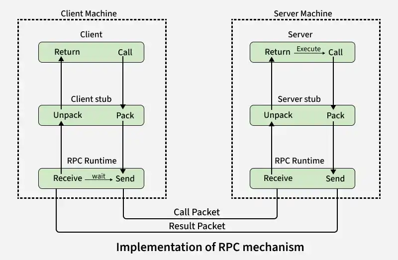
WHAT IS RPC? Action-Oriented Calls
Remote Procedure Call (RPC) allows a computer program to execute a function on a remote machine as if it were a local function call.
MS-RPC OVER SMBncacn_np Transport
Microsoft RPC uses SMB Named Pipes (e.g. \pipe\srvsvc) as its transport layer, enabling tools like PsExec and rpcclient.
Introduced protocol versioning in requests (e.g. HTTP/1.0).
Sent a status code line in responses (e.g. 200 OK).
Added HTTP Headers for metadata exchange.
Enabled non-HTML transmission via the Content-Type header.
Short-Lived Connections (The Flaw)
Default Behavior: Connection closes after every single request/response pair.
Fetching an HTML page with 5 images required 6 separate TCP handshakes.
Huge latency penalty due to repeated SYN / SYN-ACK setup & teardown.
6 Parallel TCP Lanes & Port Mapping
To bypass sequential Head-of-Line blocking, web browsers open up to 6 parallel TCP connections. Each lane assigns a unique client ephemeral source port connecting to server Port 80/443.
CLIENT BROWSER (192.168.1.50)6 PARALLEL TCP SOCKETS WEB SERVER (10.0.0.1:80)
Lane 1: Port 51234━━━ GET /index.html ━━━►Dest Port 80 Asset 1
Lane 2: Port 51235━━━ GET /style.css ━━━►Dest Port 80 Asset 2
Lane 3: Port 51236━━━ GET /app.js ━━━━━━►Dest Port 80 Asset 3
Lane 4: Port 51237━━━ GET /logo.png ━━━━►Dest Port 80 Asset 4
Lane 5: Port 51238━━━ GET /hero.jpg ━━━━►Dest Port 80 Asset 5
Lane 6: Port 51239━━━ GET /font.woff2 ━━►Dest Port 80 Asset 6
Overhead Flaw: Opening 6 parallel lanes required 6 separate TCP 3-Way Handshakes (18 TCP control packets), causing high latency and server socket exhaustion.
Introduced Chunked Transfer Encoding and Cache-Control.
The 6 Parallel Connections Workaround
Because 1 TCP connection processes requests sequentially, browsers started opening up to 6 parallel TCP connections per origin to fetch assets concurrently.
Limitation: High overhead—6 parallel TCP handshakes per domain still caused server socket exhaustion and network congestion.
HTTP/2 — Greater Performance
SPDY FOUNDATION Origin
Web pages became complex (more visuals, larger data, higher traffic). Google created SPDY, serving as the foundation for HTTP/2.
FEATURES Key Improvements
Uses one single TCP connection.
Binary protocol rather than a text protocol.
Multiplexed parallel requests over the same connection.
Compresses headers to remove duplication (HPACK).
HTTP/2 Drawbacks
Head-of-Line (HOL) Blocking: Sending all data over one TCP connection means if 1 CSS packet drops, all other packets wait for it.
DoS Vulnerabilities: HTTP/2 suffers from DoS attacks because it relies on TCP stream management logic.
HTTP/3 — HTTP over QUIC
QUIC & UDP Transport Evolution
Uses QUIC instead of TCP.
QUIC is designed for lower latency for HTTP connections.
Operates on top of UDP.
SMART MANAGER How QUIC Works
QUIC makes UDP streams reliable.
It does not alter UDP itself; it creates a "smart manager" on top of it.
Lives directly in the web browser code.
Opens 1 connection, but builds completely different lanes (streams).
Live Packet Loss Simulation: HTTP/2 vs HTTP/3
Compare how single-channel TCP (HTTP/2) freezes on packet loss vs independent UDP/QUIC streams (HTTP/3):
HTTP/2 Single TCP Pipe
Single TCP Channel Operating Normally
Server
Client
⚠️ Head-of-Line Blocking: If 1 packet drops, all trailing packets in the single TCP socket freeze.
HTTP/3 Independent QUIC Lanes
3 QUIC UDP Lanes Operating Normally
Server
Client
⚡ Independent Streams: Packet drop on Stream 2 retransmits independently; Streams 1 & 3 continue flowing!
What is SSH? (Secure Shell)
PORT 22 / TCP
The SSH protocol uses encryption to secure the connection between a client and a server. All user authentication, commands, output, and file transfers are encrypted to protect against attacks in the network.
How SSH Works in Practice
SSH is a Remote Command-Line / Terminal Control Tool.
Terminal — Local Laptop
$sshalice@192.168.1.50
ssh ➔ SSH Protocol Client
alice ➔ Remote User
192.168.1.50 ➔ Target Server IP
SSH Key Features
AUTHENTICATION
Supports encrypted password logins and secure Public Key Authentication (e.g., Ed25519 and RSA keys).
SHELL COMMANDS & OUTPUT
All interactive terminal keystrokes, remote commands, and server responses are protected by symmetric ciphers (e.g. AES-256-GCM).
SECURE FILE TRANSFERS
Integrated secure file transfer protocols — SFTP (SSH File Transfer Protocol) and SCP — run directly over port 22.
INTEGRITY & PORT FORWARDING
Uses cryptographic HMACs to prevent tampering, and supports SSH Port Forwarding (Local, Remote, and Dynamic SOCKS Tunnels).
SSH Protocol Handshake & Auth Flow
Client: TCP SYN (Port 22)
Server: TCP SYN-ACK
Step 1: TCP Connection Setup
PHASE 1: TCP
Subsystem / Sublayer Component
Transport Layer (TCP / Port 22)
Execution Details
SSH utilizes TCP at the Transport Layer. Before any SSH protocol messaging begins, standard TCP SYN ➔ SYN-ACK ➔ ACK completes.
OpenSSH Execution Trace Log
[TCP] SYN sent to 192.168.1.50:22
[TCP] SYN-ACK received
[TCP] ACK sent (ESTABLISHED)
Diffie-Hellman Exchange (Color Analogy)
Step 1: Public Agreement (Common Color)
PUBLIC COLOR
How Paint Mixing Maps to Diffie-Hellman Cryptography
Alice and Bob publicly agree on a starting common color (Yellow). This number is completely public.